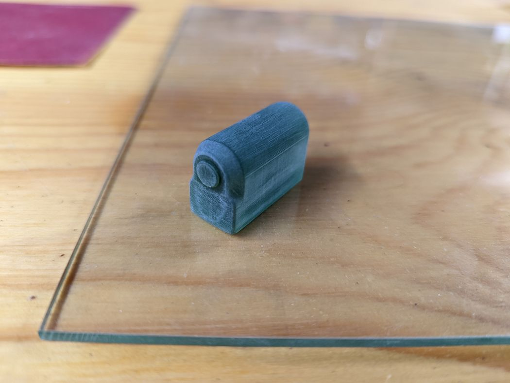
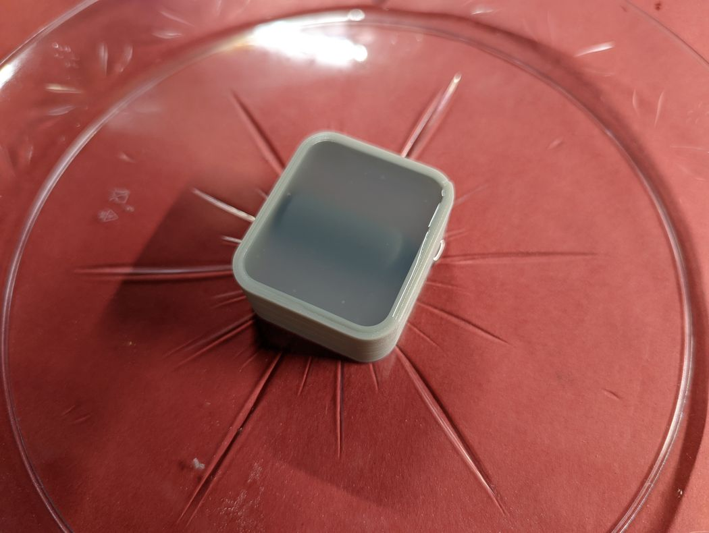
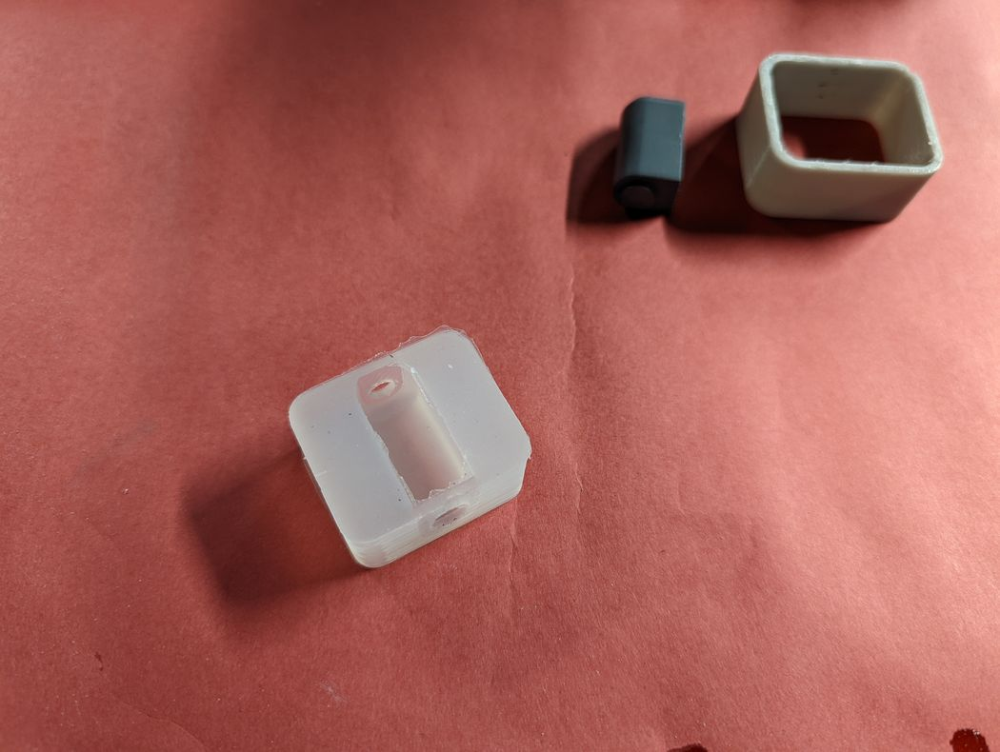
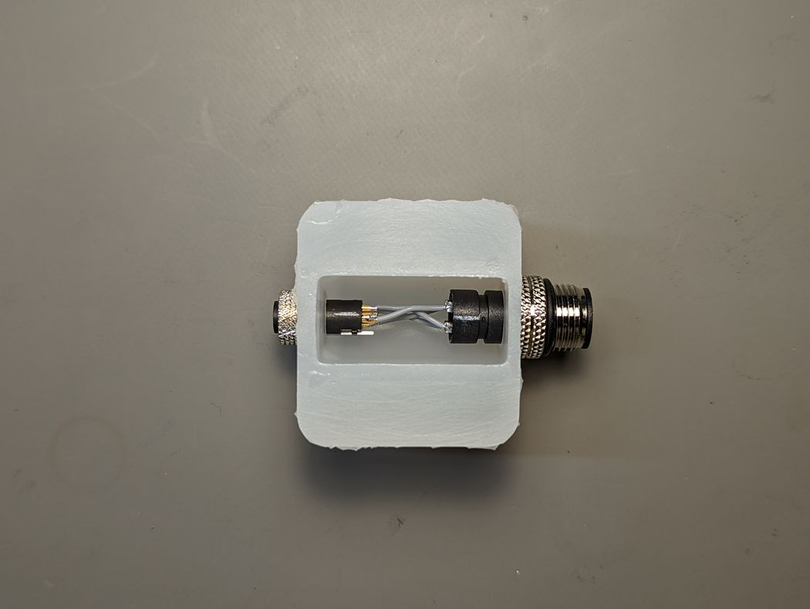
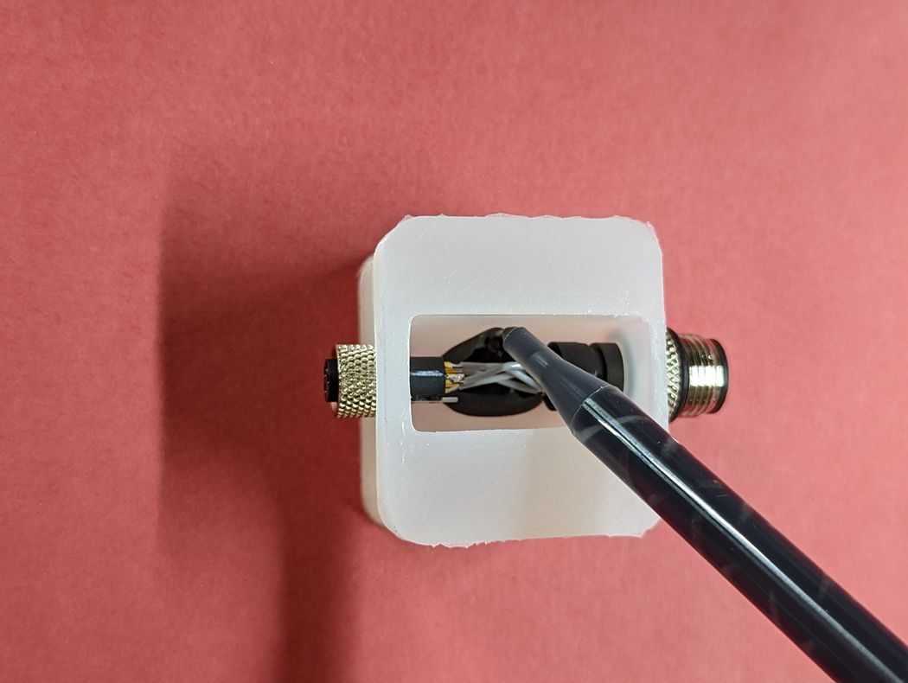
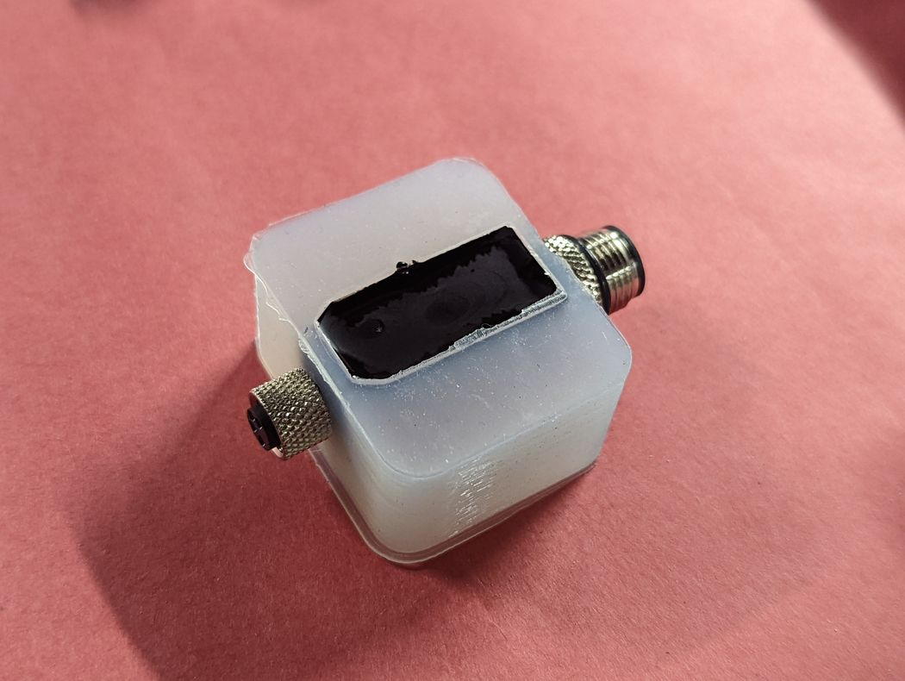
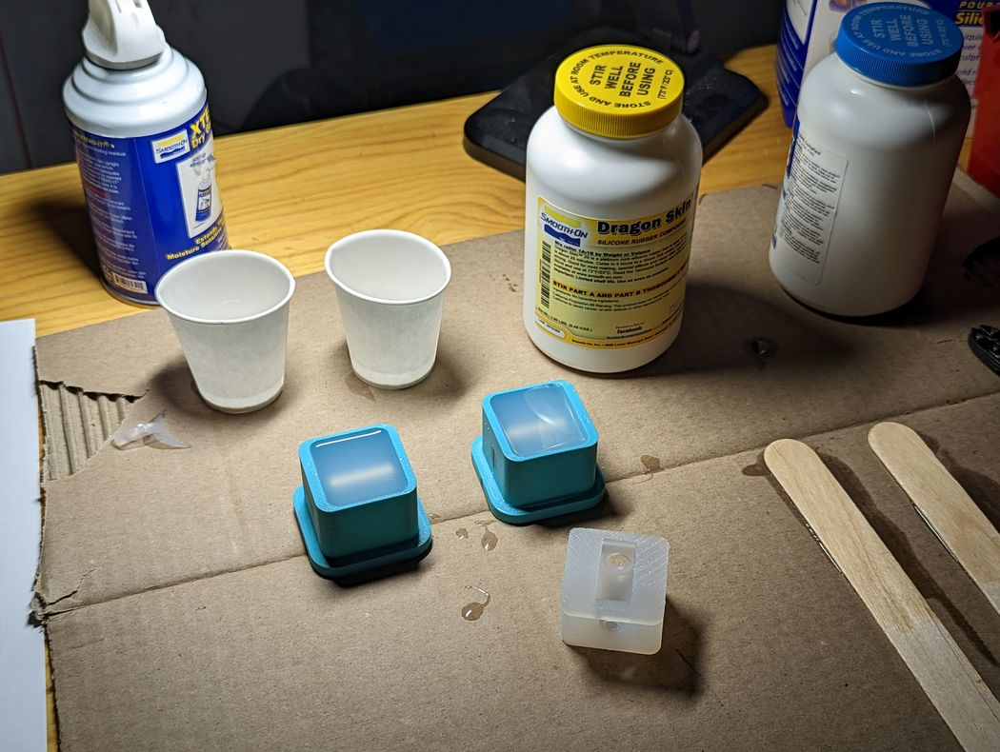

M12-to-M8 Adapter
2022
One of my favorite uses for additive manufacturing is in printing masters — or patterns, plugs, or bucks depending on the industry — for mold making. In this case, we needed a custom adapter to connect a new sensor with an M8 electrical connector to our existing M12 cable harnesses. Because of the specific wiring requirement, no off-the-shelf adapters existed, and having another company manufacture them would have been cost prohibitive in our quantities.
Instead, I designed an overmolded adapter and 3D printed a master. A part like this could be injection molded, but to keep costs down and let our existing, IPC-certified depot buildl these, I opted for a pour casting so that electrically-insulative epoxy resin could be simply pumped from a mixing nozzle into the mold. I finished the master and coated it with primer to avoid inhibiting the platinum cure mold silicone. After a few successful prototypes, and after testing the epoxy curing with and without release agent, we decided to move forward.
At this point, we could have used the prototype mold to create working masters and additional molds, but I had some revision notes, and we wanted a durable, metal master that could be more securely fastened down to improve the mold quality. So, we ordered CNC machined aluminum masters, I made several final molds, and the manufacturing depot has been using them ever since to build adapters that are being used on customer sites to this day.
      